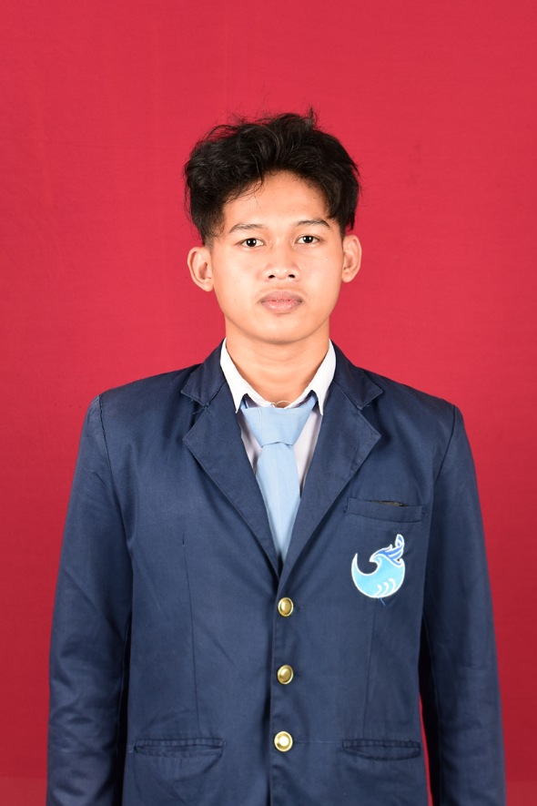

| Nama | :Sukma Raka Nugraha |
| NIM | :41037006221028 |
| Tempat, Tanggal Lahir | :Bandung,21 Maret 2004 |
| Agama | :Islam |
| Jenis Kelamin | :Laki-Laki |
| Alamat | :Jl.Neglasri II rt 02 rw 08 No 57 |
| Hobi | :Lari |
| :sukmaraka52@gmail.com | |
| No Handphone | :089635552520 |
| Pendidikan Terakhir | SMKN 14 BANDUNG |
| Riwayat apendidikan | SD Negri Sapan (2010-1016) SMP Negri 51 Bandung (2016-2019) SMK Negri 14 Bandung (2019-2022) Universitas Islam Nusantara (UNINUS), Fakultas Teknik, Program Studi Informatika (2022-Sekarang) |
| Prestasi | Perpov judo juara 3 Babak kualifikasi perpov judo juara 3 KKGSN Peserta Kejurda kurash juara 3 Internasional judo festival 2nd anniversary IJC 2020, 8 Besar |
| Minat | Saya menyukai perkembangan teknologi, bisnis dan market dunia seperti Stocks, Forex, Crypto. |
| Tujuan | saya bercita cita menjadi seorang enterprenuer di dunia teknologi ingin menjadi orang yang bisa membantu orang lain untuk mengembangkan skill nya . Dari sini pula saya bisa menciptakan opportunities dan menjadi sukses . |